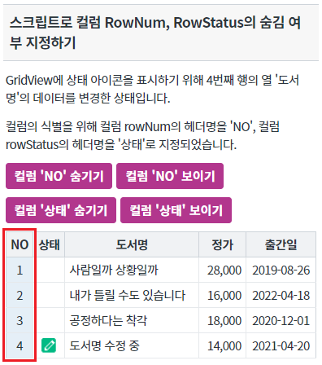
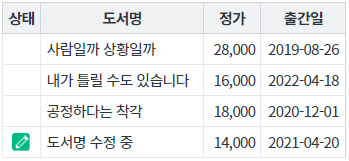
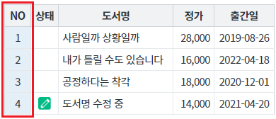
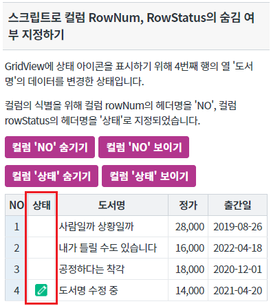
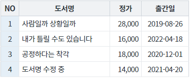
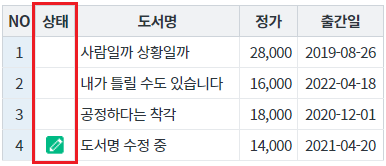
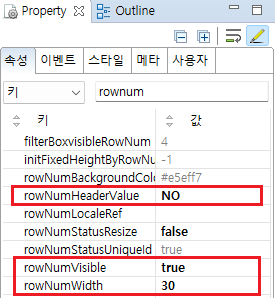
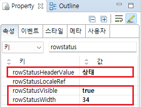

GridView의 행의 번호(rowNum), 행의 상태 rowStatus) 열의 숨기기를 스크립트로 지정하는 예제입니다. 이 기능은 컬럼의 너비(width) 설정을 0으로 설정하여 사용합니다. 이 기능은 아래의 함수를 호출하여 사용할 수 있습니다. - setRowStatusColumnWidth : rowStatus 컬럼의 폭을 변경 - setRowNumColumnWidth : rowNum 컬럼의 폭을 변경
스크립트로 컬럼 rowNum(행 번호)의 숨김 여부 지정하기
스크립트로 컬럼 rowStatus(행 상태)의 숨김 여부 지정하기
영역 [스크립트로 컬럼 RowNum, RowStatus의 숨김 여부 지정하기]의 GridView를 확인합니다.
GridView의 속성 visibleRowNum이 'true'로 지정되어 rowNum(행 번호) 표시가 되어 있습니다.
이 컬럼의 헤더 컬럼의 값은 'NO'로 지정되어 있습니다.
[브라우저(Chrome) 실행 예시]

버튼 컬럼 'NO' 숨기기를 클릭합니다.
행 번호(rowNum)가 출력 된 컬럼 'NO'가 숨겨집니다.
[브라우저(Chrome) 실행 예시]

버튼 컬럼 'NO' 보이기를 클릭합니다.
행 번호(rowNum)가 출력 된 컬럼 'NO'가 보여집니다.
[브라우저(Chrome) 실행 예시]

영역 [스크립트로 컬럼 RowNum, RowStatus의 숨김 여부 지정하기]의 GridView를 확인합니다.
GridView의 속성 rowStatusVisible이 'true'로 지정되어 rowStatus(행 상태) 표시가 되어 있습니다.
이 컬럼의 헤더 컬럼의 값은 '상태'로 지정되어 있습니다.
[브라우저(Chrome) 실행 예시]

컬럼의 식별을 위해 컬럼 rowStatus의 헤더명을 'NO'로 지정하였습니다.
버튼 컬럼 '상태' 숨기기를 클릭합니다.
행 상태(rowStatus)가 출력 된 컬럼 '상태'가 숨겨집니다.
[브라우저(Chrome) 실행 예시]

버튼 컬럼 '상태' 보이기를 클릭합니다.
행 상태(rowStatus)가 출력 된 컬럼 '상태'가 보여집니다.
[브라우저(Chrome) 실행 예시]

STEP1. GridView의 속성을 정의합니다.
[필수] rowNumVisible="true" //행 번호 표시 기능 사용
[필수] rowNumWidth="설정값" //행 번호 표시 컬럼의 width(px 단위)
예시) rowNumWidth="30" //행 번호 컬럼의 width를 30px로 지정
[선택] rowNumHeaderValue="설정값" //행 번호 표시 컬럼의 헤더 컬럼의 문자열
예시) rowNumHeaderValue="NO" //행 번호 컬럼의 헤더 값을 'NO'로 표시
[선택] keepDefaultColumnWidth="true" //autoFit="true"인 경우, rowNum 컬럼과 rowStatus 컬럼의 폭을 고정.
GridView의 속성 rowNumVisible의 값이 'true'로 지정되어야 GridView의 함수 setRowNumColumnWidth를 이용하여 열을 보이기/숨기기 기능을 구현할 수 있습니다.
그림 1.웹스퀘어5 SP5 스튜디오의 Property View(속성창) 예시

[소스 코드 예시]
<!-- gridView 의 소스 본문 예시 --> <w2:gridView rowNumVisible="true" rowNumWidth="30" rowNumHeaderValue="NO"> <!-- 중략 --> </w2:gridView>
GridView의 함수 setRowNumColumnWidth을 사용합니다.
[소스 코드 예시]
//예제 파일의 스크립트 "scwin.btn_ex1_1_onclick", "scwin.btn_ex1_2_onclick"을 참고바랍니다. //GridView의 rowNum 컬럼의 width를 0으로 지정합니다. 컬럼이 숨김된 효과를 볼 수 있습니다. grd_exam1.setRowNumColumnWidth(0); //GridView의 rowNum 컬럼의 width를 30으로 지정합니다. grd_exam1.setRowNumColumnWidth(30);
STEP1. GridView의 속성을 정의합니다.
[필수] rowStatusVisible="true" //행 상태 표시 기능 사용
[필수] rowStatusWidth="설정값" //행 상태 표시 컬럼의 width(px 단위)
예시) rowStatusWidth="34" //행 상태 컬럼의 width를 34px로 지정
[선택] rowStatusHeaderValue="설정값" //행 번호 표시 컬럼의 헤더 컬럼의 문자열
예시) rowStatusHeaderValue="상태" //행 번호 컬럼의 헤더 값을 '상태'로 표시
[선택] keepDefaultColumnWidth="true" //autoFit="true"인 경우, rowNum 컬럼과 rowStatus 컬럼의 폭을 고정.
GridView의 속성 rowStatusVisible의 값이 'true'로 지정되어야 GridView의 함수 setRowStatusColumnWidth를 이용하여 열을 보이기/숨기기 기능을 구현할 수 있습니다.
그림 2.웹스퀘어5 SP5 스튜디오의 Property View(속성창) 예시

[소스 코드 예시]
<!-- gridView 의 소스 본문 예시 --> <w2:gridView rowStatusVisible="true" rowStatusWidth="34" rowStatusHeaderValue="상태"> <!-- 중략 --> </w2:gridView>
GridView의 함수 setRowStatusColumnWidth을 사용합니다.
[소스 코드 예시]
//예제 파일의 스크립트 "scwin.btn_ex2_1_onclick", "scwin.btn_ex2_2_onclick"을 참고바랍니다. //GridView의 rowStatus 컬럼의 width를 0으로 지정합니다. 컬럼이 숨김된 효과를 볼 수 있습니다. grd_exam1.setRowStatusColumnWidth(0); //GridView의 rowSatus 컬럼의 width를 34으로 지정합니다. grd_exam1.setRowStatusColumnWidth(34);
rowStatusVisible
rowStatusHeaderValue
rowStatusWidth
rowNumStatusResize
rowNumVisible
rowNumWidth
rowNumHeaderValue
keepDefaultColumnWidth
setRowNumColumnWidth( size )
setRowStatusColumnWidth( size )
[웹스퀘어5 SP5 개발 가이드] GridView
링크 : https://docs1.inswave.com/sp5_user_guide/bc10c1b82c9a2a0b#e1c4658baf7e726f
[웹스퀘어5 SP5 개발 가이드] GridView 컬럼 숨기기
링크 : https://docs1.inswave.com/sp5_user_guide/86bdcf48029b958b#b4aac304847879a2